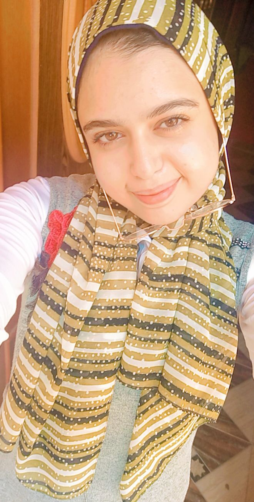

A young woman at the age of 21, in the Faculty of Commerce English,
Tanta University, her dream was to enroll in the Faculty of Medicine,
and she was very diligent, as she was called a doctor since her childhood,
but she could not join her, and she began to search for her tendencies,
so she resorted to an English trade as she loves English very much ,
she started taking English courses, and worked hard on them.
_ As she started giving courses in an interactive and modern way,
she became an English instructor for children at the Academy
_ she worked at the Hayat Academy for Development and Creativity
_ she Gives English lessons to children, primary and preparatory
_ she worked in "Adam" magazine as a translator and article writer
_ She created a free initiative for self-education, and its goal was to train 30 girls to reach the best version of them
Mai has become a person with a passion for science and
has emerged from her introverted shell and has become an interactive person with society
and has also become an inspiring person for many people,
as she publishes blogs on her page with a lot of motivation,
ways to study and techniques to help others in pursuit of his dream